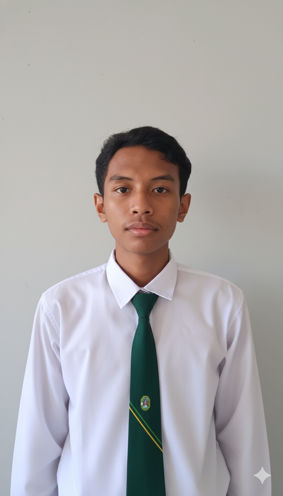

1. แนะนำตัว (Profile)
- ชื่อ-นามสกุล : ยศวัต ศรีทัด
- Name : Yossawat Srithad
- รูปโปรไฟล์: 
- คณะ /มหาวิทยาลัย/สาขา: คณะวิทยาศาสตร์ สาขาเทคโนโลยีสารสนเทศ มหาวิทยาลัยราชภัฏอุดรธานี
- ปีการศึกษา หรือ สถานะ: กำลังศึกษาอยู่ชั้นปีที่ 3
- ความสนใจเฉพาะทาง: Web Dev,back end-developer,Front end-developer
- เป้าหมายในอนาคต (Career Interest): อยากเป็นนักวิชาการคอมพิวเตอร์ได้ทำงานหลายๆอย่างที่เกี่ยวกับคอมพิวเตอร์
2. ทักษะ (Skills)
Programming:
- Python, Java, HTML/CSS/PHP, JavaScript
AI & Data:
- SQL
Tools:
- Github, VS Code, Figma,SQL Sever management studio , visual studio
Soft Skills:
- สามารถสื่อสวารและเข้ากับผู้คนได้ง่าย , สามารถปรับตัวตามสถานะการณ์ได้เป็นอย่างดี
3. ผลงานที่ผ่านมา (Projects / Portfolio)
Web Project
คำอธิบาย: เว็บไซต์นี้คือเว็ปไซค์ที่เขียนขึ้นตอนปี 1 รางวัลรองชนะเลิสอันดับที่ 2 ในการแข่งขันพัฒนาเว็ปไซค์ของนักศึกษาสาขาเทคโนโลยีสารสนเทศปีที่ 1
4. การศึกษา (Education)
วิทยาศาสตรบัณฑิต
สาขาวิชา เทคโนโลยีสารสนเทศ
คณะ วิทยาศาสตร์
มหาวิทยาลัย มหาวิทยาลัยราชภัฏอุดรธานี
ปีที่เข้าศึกษา 2566-ปัจจุบัน
5. กิจกรรมและผลงานอื่น ๆ (Activities / Achievements)
- เข้าร่วมการแข่งขันพัฒนาเว็ปไซต์ของนักศึกษาสาขาเทคโนโลยรสารสนเทศ ชั้นปีที่ 1 : ได้รับรางวัลรองชนะเลิศอันที่ที่ 2
6. ติดต่อ (Contact)
ช่องทางการติดต่อสำหรับผู้ที่สนใจ
- Email : 66040233146@udru.ac.th
- GitHub : github.com/Yossawat-Srithad
- GitHub : github.com/armando-9
- Facebook : Facebook